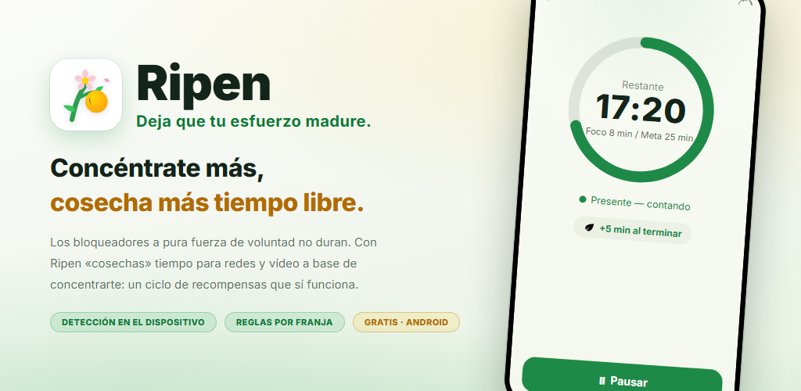
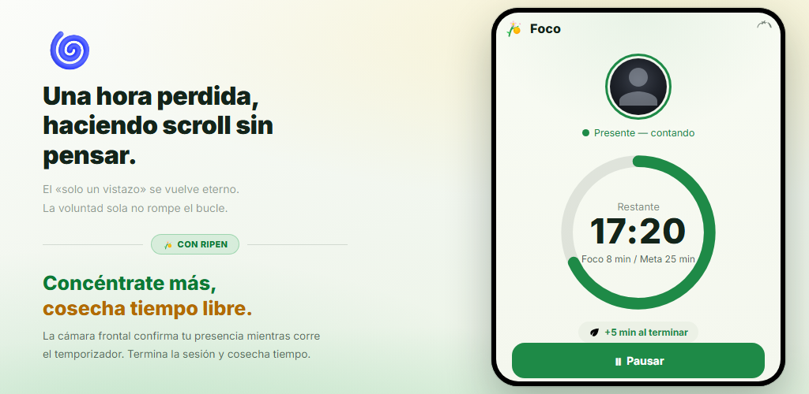
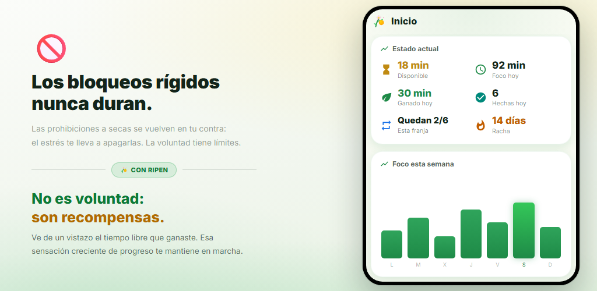
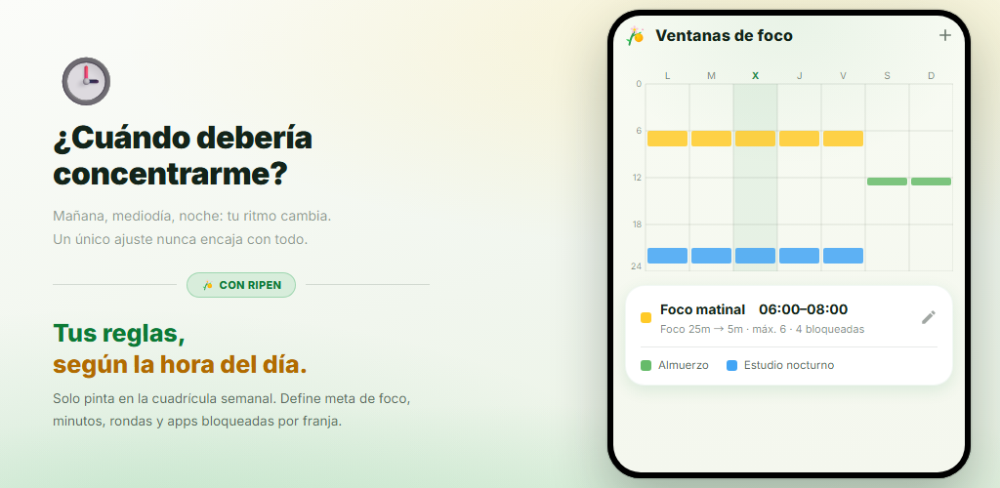
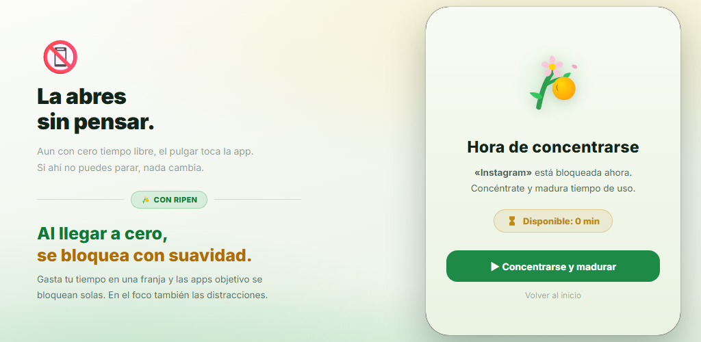
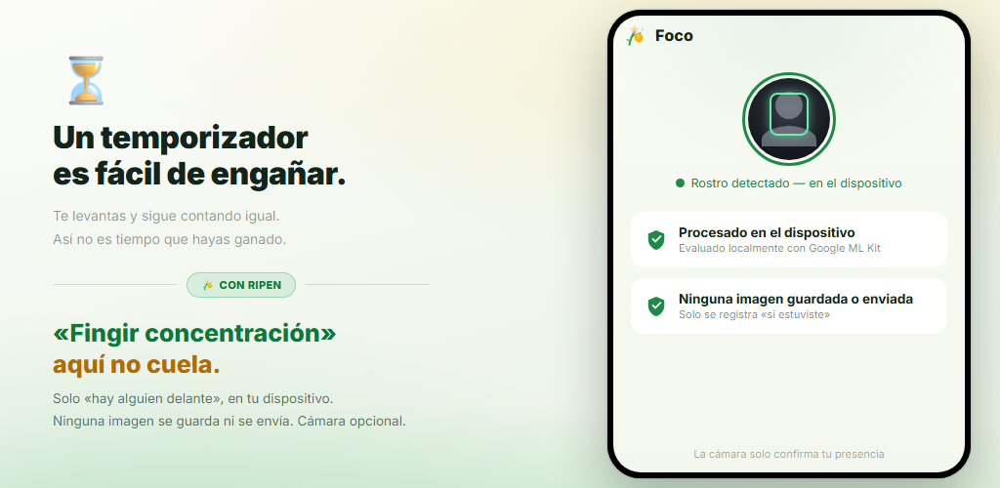

Ciclo de recompensas
Cada vez que completas un temporizador de foco, ganas tiempo para redes sociales y apps de vídeo. Son las recompensas, no la fuerza de voluntad, las que cambian tu comportamiento.
Los bloqueadores de apps que dependen solo de la fuerza de voluntad no duran. Ripen es una app de hábitos con recompensas: cuanto más te concentras y estudias, más tiempo “cosechas” para redes sociales y apps de vídeo. La verificación de presencia con la cámara se hace en tu dispositivo y puedes desactivarla en cada franja horaria.
Android 8.0+ · Gratis · Sin anuncios · Sin cuenta

Sin configuraciones complicadas. Solo decides cuándo concentrarte, durante cuánto tiempo y cuánto tiempo recuperas.
Pinta la cuadrícula semanal para elegir los días y las horas en los que quieres concentrarte
Con la verificación de presencia activada, la cámara frontal confirma que estás ahí mientras el temporizador avanza
Cada ronda completada te da los minutos que hayas fijado (también vale un quiz de palabras)
Cuando quedan 0 minutos, las apps que elegiste se bloquean con suavidad
En las franjas con verificación de presencia activada, el temporizador de foco solo avanza mientras tu cara está frente a la pantalla. Completa el objetivo y ganas los minutos que hayas fijado para redes sociales o apps de vídeo. Las rondas que abandonas antes de tiempo no suman nada.

Consulta de un vistazo el tiempo disponible, el foco de hoy, lo ganado hoy y tu racha de días. Los gráficos de tendencia semanal y mensual y un mapa de calor por horas revelan cuándo te concentras mejor.

Solo tienes que pintar la cuadrícula semanal para fijar los días y las horas en los que quieres concentrarte. Cada ventana tiene su propio objetivo de foco, minutos por ronda, límite de rondas, apps bloqueadas y verificación de presencia con la cámara. Fuera de las ventanas, eres libre.

Cuando agotas el tiempo de una ventana, al abrir una de las apps elegidas aparece una pantalla de bloqueo. Las apps que distraen también se bloquean durante las sesiones de foco. Y el “bloqueo de ajustes” te impide relajar las reglas más tarde.

Un temporizador por sí solo sigue contando aunque te levantes. Ripen usa la cámara frontal para determinar únicamente si hay una cara frente a la pantalla, y lo hace en tu dispositivo. No se guarda ni se envía ninguna imagen. También puedes elegir ventanas sin cámara.

Mira cómo te concentras, cosechas tiempo y cómo tus apps se bloquean cuando se agota.
Dale la vuelta al “quiero dejarlo, pero no puedo”, con recompensas.
Cada vez que completas un temporizador de foco, ganas tiempo para redes sociales y apps de vídeo. Son las recompensas, no la fuerza de voluntad, las que cambian tu comportamiento.
La cámara frontal solo determina si estás frente a la pantalla. Se procesa en tu dispositivo y no se guarda ni se envía ninguna imagen. Puedes desactivarla en cada ventana.
Crea varias ventanas por día y hora. Cada ventana tiene su propio objetivo de foco, minutos, límite de rondas y apps bloqueadas.
Responde correctamente un número fijado de preguntas de vocabulario en inglés (4 opciones) para ganar una ronda. Unas 10.000 palabras por nivel CEFR, con prueba de nivel, lista de repaso y tus propios mazos.
Minutos que puedes usar en cuanto empieza una ventana, incluso antes de concentrarte. Se suman a las recompensas por foco.
Una función de compromiso que te impide retocar los ajustes para conseguir más ocio. Los cambios que relajan las reglas exigen programar un desbloqueo y esperar de 1 a 30 días.
Tendencias de foco, un calendario de foco, la tasa de finalización, tus mejores horas de concentración y las tendencias de uso de apps bloqueadas, todo en gráficos.
Sin abrir la app, una notificación permanente muestra el tiempo disponible, la próxima ventana de foco y el tiempo que queda de tu sesión. Al terminar, suena y vibra.
Elige el tema del sistema, claro u oscuro. La app está disponible en 12 idiomas, entre ellos el español, el inglés y el japonés.
“Una cámara para comprobar tu concentración” puede sonar preocupante. Ripen está diseñada con la privacidad como prioridad.
La detección de presencia facial se ejecuta en tu dispositivo con Google ML Kit. El vídeo nunca se envía a un servidor externo.
Solo determina si hay una cara. Las fotos y los vídeos nunca se guardan ni se envían. Lo único que registra es cuántos segundos estuviste presente y concentrado.
Los registros de foco y los ajustes se guardan en tu dispositivo y nunca se envían a los servidores de Ripen. Si la copia de seguridad de Android está activada, tus ajustes se incluyen en la copia de tu cuenta de Google y se restauran al reinstalar.
Sin registro ni inicio de sesión, y sin anuncios ni herramientas de análisis dentro. Descárgala y empieza al instante.
Descárgala desde Google Play